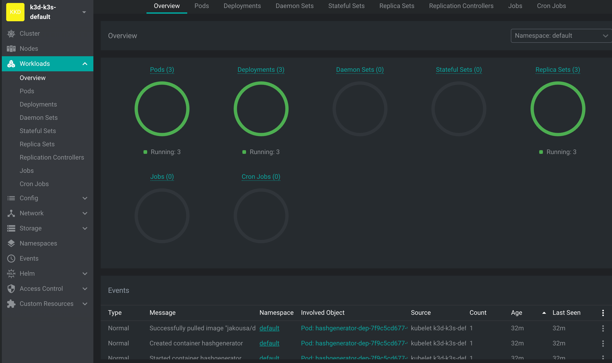
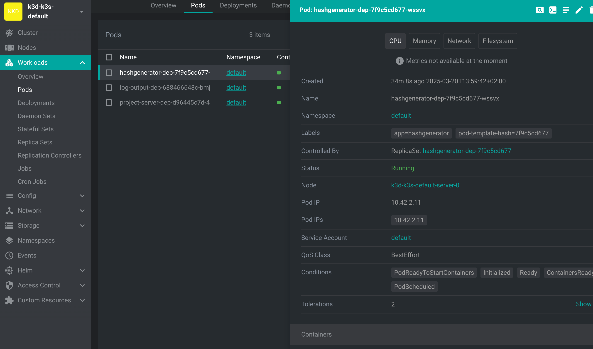

O Kubernetes é um sistema de "autocura", e voltaremos a esse conceito e a como o Kubernetes realmente funciona no Capítulo 6. Mas, nesta fase, "autocura" já é um conceito importante de entender: normalmente, você (o mantenedor ou o desenvolvedor) não precisa fazer nada caso algo dê errado com um pod ou contêiner.
Às vezes, porém, você precisa interferir, ou pode ter problemas com sua própria configuração. À medida que você tenta encontrar bugs na sua configuração, comece eliminando todas as possibilidades, uma por uma. O segredo é ser sistemático e questionar tudo. Aqui estão as ferramentas preliminares para resolver problemas.
A primeira é kubectl describe, que pode lhe dizer quase tudo o que você precisa saber sobre qualquer recurso.
O segundo é kubectl logs, com o qual você pode acompanhar os registros do seu software possivelmente quebrado.
A terceira é que kubectl delete simplesmente excluirá o recurso e, em alguns casos, como acontece com os pods em implantação, um novo será liberado automaticamente.
Por fim, temos a ferramenta abrangente Lens "The Kubernetes IDE", que você deve começar a usar agora mesmo para se familiarizar com o uso.
Vamos testar essas ferramentas e experimentar usando o Lens. Você provavelmente enfrentará muitos desafios reais de depuração durante os exercícios!
Vamos implantar o aplicativo e ver o que está acontecendo:
$ kubectl apply -f https://raw.githubusercontent.com/kubernetes-hy/material-example/master/app1/manifests/deployment.yaml
deployment.apps/hashgenerator-dep created$ kubectl describe deployment hashgenerator-dep
Name: hashgenerator-dep
Namespace: default
CreationTimestamp: Thu, 20 Mar 2025 13:59:42 +0200
Labels: <none>
Annotations: deployment.kubernetes.io/revision: 1
Selector: app=hashgenerator
Replicas: 1 desired | 1 updated | 1 total | 1 available | 0 unavailable
StrategyType: RollingUpdate
MinReadySeconds: 0
RollingUpdateStrategy: 25% max unavailable, 25% max surge
Pod Template:
Labels: app=hashgenerator
Containers:
hashgenerator:
Image: jakousa/dwk-app1:b7fc18de2376da80ff0cfc72cf581a9f94d10e64
Port: <none>
Host Port: <none>
Environment: <none>
Mounts: <none>
Volumes: <none>
Conditions:
Type Status Reason
---- ------ ------
Available True MinimumReplicasAvailable
Progressing True NewReplicaSetAvailable
OldReplicaSets: <none>
NewReplicaSet: hashgenerator-dep-75bdcc94c (1/1 replicas created)
Events:
Type Reason Age From Message
---- ------ ---- ---- -------
Normal ScalingReplicaSet 8m39s deployment-controller Scaled up replica set hashgenerator-dep-75bdcc94c to 1Há muitas informações que ainda não estamos prontos para avaliar. Reserve um momento para ler tudo. Existem pelo menos algumas informações importantes que conhecemos, principalmente porque as definimos anteriormente no yaml. Os Eventos são muitas vezes o lugar para procurar erros.
O comando describe também pode ser usado para outros recursos. Vamos ver o pod a seguir:
$ kubectl describe pod hashgenerator-dep-75bdcc94c-whwsm
...
Events:
Type Reason Age From Message
---- ------ ---- ---- -------
Normal Scheduled 26s default-scheduler Successfully assigned default/hashgenerator-dep-7877df98df-qmck9 to k3d-k3s-default-server-0
Normal Pulling 15m kubelet Pulling image "jakousa/dwk-app1:b7fc18de2376da80ff0cfc72cf581a9f94d10e64"
Normal Pulled 26s kubelet Container image "jakousa/dwk-app1:b7fc18de2376da80ff0cfc72cf581a9f94d10e64"
Normal Created 26s kubelet Created container hashgenerator
Normal Started 26s kubelet Started container hashgeneratorHá novamente muita informação, mas desta vez vamos nos concentrar nos acontecimentos. Aqui podemos ver tudo o que aconteceu. O agendador extraiu a imagem com sucesso e iniciou o contêiner no nó chamado "k3d-k3s-default-server-0". Tudo está funcionando como esperado, excelente. O aplicativo está em execução.
Em seguida, vamos verificar se o aplicativo está realmente fazendo o que deveria, lendo os logs.
$ kubectl logs hashgenerator-dep-75bdcc94c-whwsm
jst944
3c2xas
s6ufaj
cq7ka6Tudo parece estar em ordem. Mas não seria ótimo se houvesse um painel para ver tudo acontecendo? Vamos ver o que a Lens pode fazer.
Atualmente, o Lens requer uma conta para fazer login. Também é possível usar o Freelens, que é a versão gratuita e de código aberto do Lens que não requer login.
Primeiro, você precisará adicionar o cluster ao Lens. Se a configuração não estiver disponível no menu suspenso, você pode obter o kubeconfig personalizado com:
kubectl config view --minify --rawDepois de adicionar o cluster, abra a aba Cargas de trabalho/Visão geral. Uma visualização semelhante à seguinte deve ser aberta.

[Imagem: Visão geral das Cargas de trabalho no Lens]
Na parte inferior, podemos ver todos os eventos e, na parte superior, podemos ver o status dos diferentes recursos em nosso cluster. Tente excluir e reaplicar a implantação e você verá eventos no painel. Esta é a mesma saída que você veria com kubectl get events.
Em seguida, vamos navegar até a aba Cargas de trabalho/Pods e clicar em nosso pod com o nome "hashgenerator-dep-...".

[Imagem: Detalhes do Pod no Lens]
A visualização nos mostra as mesmas informações que você obtém com kubectl describe. A GUI também nos oferece ações. Os ícones no canto superior direito são:
"Por que prefiro usar Lens? Quando você usa o kubectl no terminal para listar pods, não há certeza de que os pods permanecerão inalterados quando você emitir o próximo comando. O Lens, por outro lado, fornece uma interface gráfica dinâmica que é atualizada em tempo real, permitindo que você rastreie visualmente o status de pods e outros objetos conforme eles aparecem, desaparecem ou sofrem alterações." - Matti Paksula.